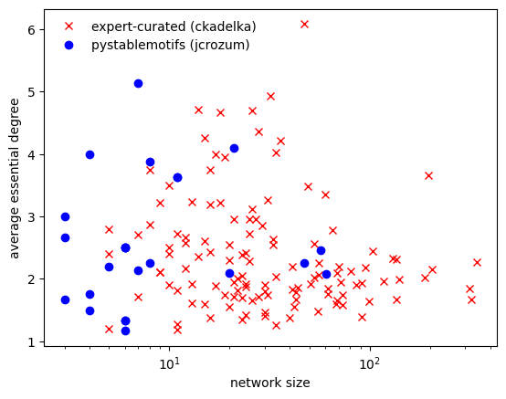
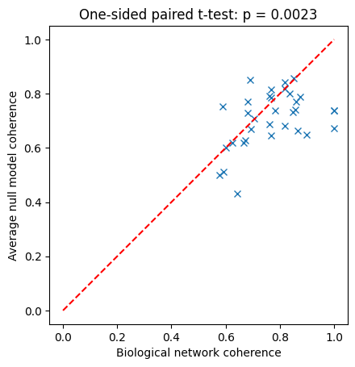
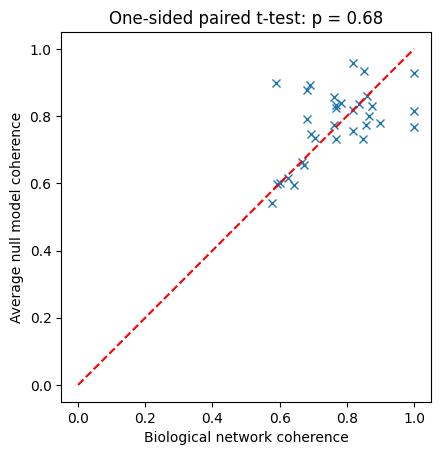

Curated biological Boolean networks and null models
In this tutorial, we study how to analyze curated biological Boolean networks.
What you will learn
You will learn how to:
load repositories of curated biological Boolean network models,
analyze these models,
generate null models to test the statistical significance of features in biological models.
These tools enable real research findings, namely the identification of design principles of regulatory functions and networks.
Setup
[1]:
import boolforge as bf
import numpy as np
import matplotlib.pyplot as plt
from scipy.stats import ttest_rel
Loading model repositories
BoolForge makes it very easy to load all models included in three different repositories of curated biological Boolean networks.
[2]:
models = bf.get_bio_models_from_repository(simplify_functions=True)
bns = models['BooleanNetworks']
n_models = len(bns)
The function get_bio_models_from_repository loads, by default, all 122 distinct biological Boolean network models, analyzed in Kadelka et al., Sci Adv, 2024, and deposited in a Github repository. The models are parsed directly from the associated Github repository, meaning a wireless connection is required to successfully execute this function. Setting the optional
parameter simplify_functions=True ensures that all update functions are non-degenerate. This is important for correct null model computation. By default, because this procedure may be very time-confusing for networks with very high degree, simplify_functions=False. Note that any BooleanNetwork object bn can be simplified at any time, using bn.simplify_functions().
Models from the two other available repositories can be loaded by selecting the respective Github repository name:
[3]:
models_sm = bf.get_bio_models_from_repository('pystablemotifs (jcrozum)',
simplify_functions=True)
bns_sm = models_sm['BooleanNetworks']
n_models_sm = len(bns_sm)
#models_bd = boolforge.get_bio_models_from_repository('biodivine (sybila)',
# simplify_functions=True)
#n_models_bd = len(models_bd)
#bns_bd = models_bd['BooleanNetworks']
Note that the last repository is very large, which is why this code is commented out.
Analyzing model repositories
By applying BoolForge functions to all models in a repository, we can swiftly generate summary statistics, such as the size distribution of the models, or their average degree.
[4]:
sizes = [bn.N for bn in bns]
average_degrees = [np.mean(bn.indegrees) for bn in bns]
Plotting the size of a model against its average essential degree (essential because we removed all non-essential inputs by setting simplify_functions=True), we observe that, for these models, there exists no strong correlation between size and degree.
[5]:
sizes_sm = [bn.N for bn in bns_sm]
average_degrees_sm = [np.mean(bn.indegrees) for bn in bns_sm]
f,ax = plt.subplots()
ax.semilogx(sizes,average_degrees,'rx',label = 'expert-curated (ckadelka)')
ax.semilogx(sizes_sm,average_degrees_sm,'bo',label = 'pystablemotifs (jcrozum)')
ax.set_xlabel('network size')
ax.set_ylabel('average essential degree')
ax.legend(loc='best',frameon=False);

Null models
Observed properties of Boolean networks are often difficult to interpret in isolation. For example, a network may exhibit a certain number of attractors, a particular robustness to perturbations, or a specific Derrida value. However, it is not immediately clear whether such properties are meaningful or simply typical for networks with the same size and structural characteristics.
To address this question, researchers compare observed networks with null models: randomly generated Boolean networks that preserve selected structural features, such as the number of nodes, the wiring diagram, or the bias of regulatory functions. By analyzing ensembles of such randomized networks, it becomes possible to determine whether the behavior of a given network is unusual or expected.
The BoolForge function random_null_model(BooleanNetwork, *args) provides extensive tools for generating these null models and for performing ensemble-based analyses that connect structural properties of Boolean functions and networks with their dynamical behavior.
The function takes as required input a Boolean network. Important: This network may not contain any degenerate update functions. If it does, these functions must be simplified via bn.simplify_functions() prior to generating null models. The avoid repeating this step many times, this simplification is not performed inside random_null_model. The type of null model is specified by optional arguments. Both the wiring diagram and the Boolean update rules can be randomized subject to specified
invariants.
Randomization of the wiring diagram
By default, the wiring diagram of the provided Boolean network is not changed. However, setting wiring_diagram="fixed_indegree" generates a new wiring diagram using random_wiring_diagram. Each node in the new wiring diagram has exactly the same in-degree as in the provided Boolean network.
[6]:
bn_orig = bf.random_network(N=8, n=2, indegree_distribution='Poisson', rng = 3)
bn_null = bf.random_null_model(bn_orig, wiring_diagram='fixed_indegree')
print('bn_orig.in-degrees:',bn_orig.indegrees)
print('bn_null.in-degrees:',bn_null.indegrees)
print()
print('bn_orig.out-degrees:',bn_orig.outdegrees)
print('bn_null.out-degrees:',bn_null.outdegrees)
bn_orig.in-degrees: [1 2 1 2 1 2 3 2]
bn_null.in-degrees: [1 2 1 2 1 2 3 2]
bn_orig.out-degrees: [4 3 1 0 1 0 1 4]
bn_null.out-degrees: [2 2 1 3 0 1 3 2]
We see that the in-degrees of the original Boolean network are preserved, while the out-degrees change substantially. Additional optional arguments in the fixed_indegree mode include strongly_connected, allow_self_loops, and min_out_degree_one, as described in detail in Tutorial 9.
A more constrained null model fixes the out-degree in addition to the in-degree. This can be obtained by setting wiring_diagram="fixed_in_and_outdegree".
[7]:
bn_orig = bf.random_network(N=8, n=2, indegree_distribution='Poisson', rng = 3)
bn_null = bf.random_null_model(bn_orig, wiring_diagram='fixed_in_and_outdegree')
print('bn_orig.in-degrees:',bn_orig.indegrees)
print('bn_null.in-degrees:',bn_null.indegrees)
print()
print('bn_orig.out-degrees:',bn_orig.outdegrees)
print('bn_null.out-degrees:',bn_null.outdegrees)
bn_orig.in-degrees: [1 2 1 2 1 2 3 2]
bn_null.in-degrees: [1 2 1 2 1 2 3 2]
bn_orig.out-degrees: [4 3 1 0 1 0 1 4]
bn_null.out-degrees: [4 3 1 0 1 0 1 4]
In the fixed_in_and_outdegree mode, the original wiring diagram is rewired through an edge-swapping algorithm. Additional optional arguments that can be used in this mode include allow_new_self_loops and allow_self_loop_rewiring.
Randomization of the update functions
In addition to the wiring diagram, the Boolean update functions can also be randomized. This behavior is controlled by two Boolean flags:
preserve_bias: If True (default), the newly generated update function of each node has the same Hamming weight (number of ones in the truth table) as the original update function.preserve_canalizing_depth: If True (default), the newly generated update function of each node has the same canalizing depth as the original update function.
If both flags are True (the default), both properties are preserved simultaneously. If neither flag is True, the newly generated update rules may be any non-degenerate Boolean function consistent with the given in-degree.
[8]:
# 8-node network governed by 3-input functions with minimum canalizing depth 1
bn_orig = bf.random_network(N=8, n=3, depth=1, rng = 6)
bn_null00 = bf.random_null_model(bn_orig,
preserve_bias=False,
preserve_canalizing_depth=False)
bn_null01 = bf.random_null_model(bn_orig,
preserve_bias=False,
preserve_canalizing_depth=True)
bn_null10 = bf.random_null_model(bn_orig,
preserve_bias=True,
preserve_canalizing_depth=False)
bn_null11 = bf.random_null_model(bn_orig,
preserve_bias=True,
preserve_canalizing_depth=True)
print('Canalizing depths:')
print('bn_orig: ',
[f.get_canalizing_depth() for f in bn_orig.F])
print('bn_null00:',
[f.get_canalizing_depth() for f in bn_null00.F])
print('bn_null01:',
[f.get_canalizing_depth() for f in bn_null01.F])
print('bn_null10:',
[f.get_canalizing_depth() for f in bn_null10.F])
print('bn_null11:',
[f.get_canalizing_depth() for f in bn_null11.F])
print()
print('Hamming weights:')
print('bn_orig: ',
[f.hamming_weight for f in bn_orig.F])
print('bn_null00:',
[f.hamming_weight for f in bn_null00.F])
print('bn_null01:',
[f.hamming_weight for f in bn_null01.F])
print('bn_null10:',
[f.hamming_weight for f in bn_null10.F])
print('bn_null11:',
[f.hamming_weight for f in bn_null11.F])
Canalizing depths:
bn_orig: [3, 3, 1, 1, 3, 3, 1, 3]
bn_null00: [0, 3, 3, 0, 3, 3, 1, 0]
bn_null01: [3, 3, 1, 1, 3, 3, 1, 3]
bn_null10: [0, 0, 1, 1, 3, 0, 2, 3]
bn_null11: [3, 3, 1, 1, 3, 3, 1, 3]
Hamming weights:
bn_orig: [3, 5, 6, 6, 1, 5, 2, 7]
bn_null00: [3, 7, 7, 5, 5, 3, 6, 3]
bn_null01: [5, 3, 2, 2, 7, 5, 2, 5]
bn_null10: [3, 5, 6, 6, 1, 5, 2, 7]
bn_null11: [3, 5, 6, 6, 1, 5, 2, 7]
We see that the preserved structural constraints determine which properties of the original network are retained in the null models. Such controlled randomization allows systematic investigation of how structural features influence network dynamics.
Example use case: high coherence of biological networks
As an example, we compare the coherence of curated biological Boolean network models with the coherence expected under randomized null models. Coherence measures the long-term resilience of a network to small perturbations.
For each biological network, we generate an ensemble of randomized null models in which the wiring diagram is preserved but the Boolean update rules are replaced by random Boolean functions. We then compare the coherence of the biological model with the average coherence of its corresponding null models.
[9]:
n_null_models = 50
bns_to_analyze = [bn for bn in bns if bn.N <= 16]
bio_data = [bn.get_attractors_and_robustness_synchronous_exact()['Coherence']
for bn in bns_to_analyze]
null_data = []
for bn in bns_to_analyze:
null_data.append([])
for _ in range(n_null_models):
null_model = bf.random_null_model(bn,
preserve_bias=False,
preserve_canalizing_depth=False)
null_data[-1].append(
null_model.get_attractors_and_robustness_synchronous_exact()['Coherence']
)
f,ax = plt.subplots()
ax.plot(bio_data,np.mean(null_data,1),'x')
ax.plot([0,1],[0,1],'r--')
ax.set_aspect('equal', adjustable='box')
ax.set_xlabel('Biological network coherence')
ax.set_ylabel('Average null model coherence')
stat, p = ttest_rel(bio_data,np.mean(null_data,1), alternative='greater')
p_str = f"{p:.2g}" if p >= 1e-3 else "< 0.001"
ax.set_title(f"One-sided paired t-test: p {('= ' if p >= 1e-3 else '')}{p_str}");

We see that most biological networks exhibit higher than expected coherence. Even for this small ensemble of biological networks (restricted here to networks with at most 16 nodes to allow exact dynamical analysis), this is a statistically significant difference, as exemplified by the one-sided paired t-test.
The higher coherence observed in biological networks is likely due to their highly biased and canalized regulatory logic. To test this, we can rerun the computational experiment, this time with null models where bias and/or canalizing depth are preserved.
[10]:
null_data = []
for i,bn in enumerate(bns_to_analyze):
null_data.append([])
for _ in range(n_null_models):
null_model = bf.random_null_model(bn,
preserve_bias=True,
preserve_canalizing_depth=True)
null_data[-1].append(
null_model.get_attractors_and_robustness_synchronous_exact()['Coherence']
)
f,ax = plt.subplots()
ax.plot(bio_data,np.mean(null_data,1),'x')
ax.plot([0,1],[0,1],'r--')
ax.set_aspect('equal', adjustable='box')
ax.set_xlabel('Biological network coherence')
ax.set_ylabel('Average null model coherence');
stat, p = ttest_rel(bio_data,np.mean(null_data,1), alternative='greater')
p_str = f"{p:.2g}" if p >= 1e-3 else "< 0.001"
ax.set_title(f"One-sided paired t-test: p {('= ' if p >= 1e-3 else '')}{p_str}");

We observe that matching canalizing depth and bias (or just one of them, try it!) suffices to eliminate the significant difference in coherence between biological networks and their null models.
This illustrates how controlled null models can reveal which structural properties of biological regulatory logic are responsible for observed dynamical behavior.
Summary
In this tutorial, we introduced null models for Boolean networks and demonstrated how BoolForge can generate randomized networks while preserving selected structural properties. Such null models provide a statistical baseline that helps determine whether observed structural or dynamical properties of a Boolean network are unusual or simply typical for networks with similar characteristics.
We considered two main classes of null models:
Wiring diagram randomization, where the regulatory graph is modified while preserving invariants such as node in-degrees or both in- and out-degrees.
Update function randomization, where Boolean update rules are replaced by new functions that preserve properties such as bias or canalizing depth.
In addition, we demonstrated how Boolean network models can be loaded from biological model repositories and analyzed using the same structural and dynamical tools provided by BoolForge. This enables systematic investigation of curated regulatory network models and comparison with appropriate null models.
Together, these capabilities allow researchers to study how structural features of regulatory networks influence their dynamical behavior and to place biological models in the broader context of ensembles of randomized networks.